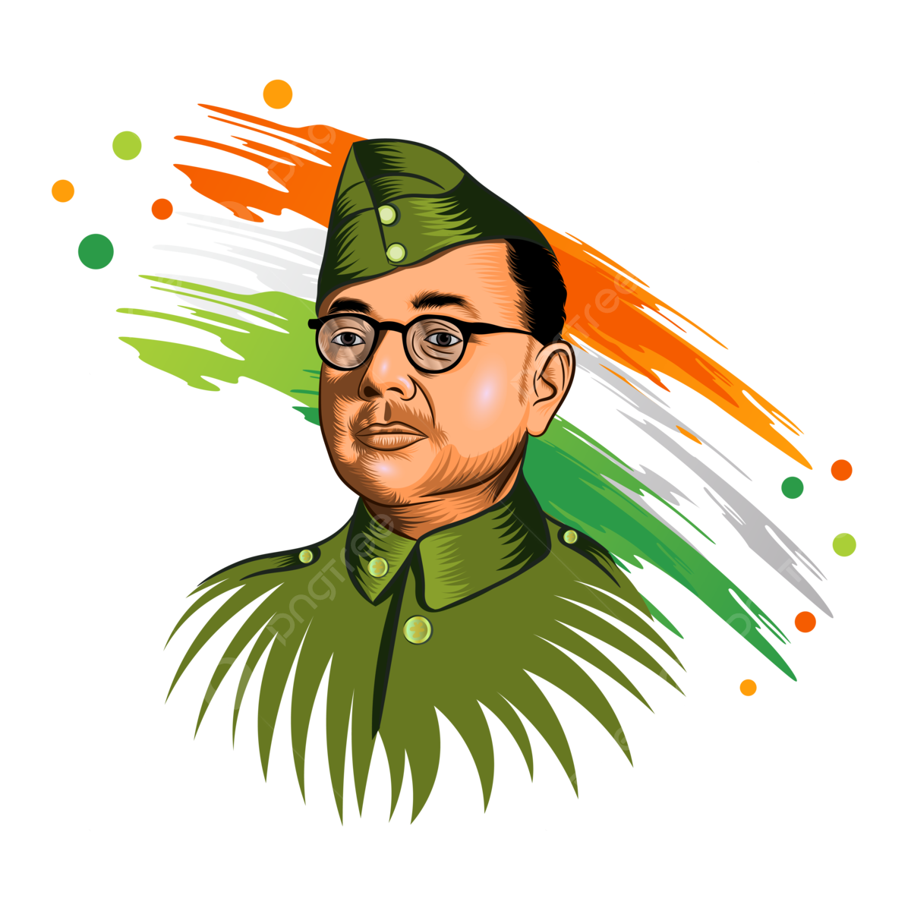

“
Give me blood and I will give you freedom.
🎵 Patriotic Music
Know More About the Tiranga
Every color and symbol in our flag carries deep meaning and national pride.
Saffron
Represents courage, sacrifice, leadership, and the spirit of selflessness.
White
Symbolizes peace, truth, honesty, and the path of harmony.
Green
Represents growth, prosperity, nature, and faith in the future.
Ashoka Chakra
The wheel of dharma symbolizes progress, justice, and continuous motion.
Evolution of the Indian Flag
From resistance to freedom — the remarkable journey of India's national identity.